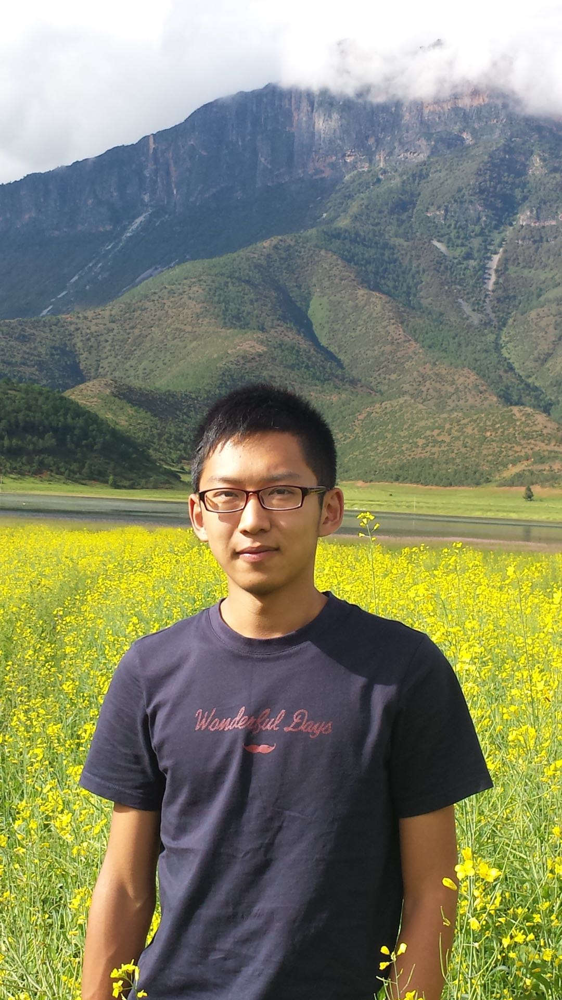

Introduction
I'm a second-year Ph.D. student in Mechanical and Aerospace Engineerning Department in UC San Diego. I'm working in the Flow and Control Lab under the instructions of Prof. Thomas R. Bewley. My research focuses on the development of state-of-the-art derivative-free optimization algorithms via global surrogate model to solve nonconvex programming, with applications in robotic trajectory following problem and wavy wall shape design.
Before my Ph.D. study, I received M.S. in Computational Science Mathematics, and Engineering (CSME) in UC San Diego since 2018. I completed my B.S. since 2016 in Applied Mathematics in Tongji University in Shanghai, China.
Research interests
News
It is difficult to say what is impossible, for the dream of yesterday is the hope of today and the reality of tomorrow. - Dr. Robert Goddard
Everything negative - pressure, challenges - is all an opportunity for me to rise. - Kobe Bryant